Spatial filtering: lân cận điểm ảnh, kernel, làm mượt và làm sắc nét.
Trường ĐH Công nghệ - Đại học Quốc gia Hà Nội
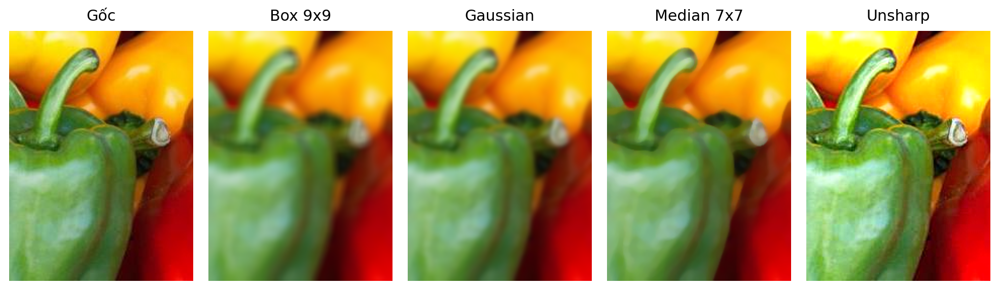
Khác phép toán điểm, lọc không gian thay mỗi điểm ảnh bằng thông tin từ một vùng lân cận. Chọn kernel khác nhau sẽ làm mờ, khử nhiễu hoặc tăng sắc nét.
| Tuần | Chủ đề | Yêu cầu |
|---|---|---|
| 3 | Histogram, cân bằng và so khớp histogram | Bài tập gamma/contrast |
| 4 | Lọc ảnh trong miền không gian | Thực hành ở nhà |
| 5 | Lọc ảnh tiếp: thiết kế/tìm filters | Thực hành ở nhà |
| 6 | Ứng dụng histogram, template matching | Bài tập giữa kỳ |
Buổi này là cầu nối từ histogram sang các kỹ thuật lọc và thiết kế bộ lọc ở tuần sau.
Sau buổi học, sinh viên có thể:
Tuần trước: đổi từng mức xám.
Tuần này: dùng cả vùng quanh điểm ảnh.
Bước chuyển: từ "mỗi điểm ảnh là một số" sang "mỗi điểm ảnh nằm trong một vùng lân cận".
Khi nói "lọc tại \((x,y)\)", ta đang đặt tâm kernel lên điểm ảnh đó và nhìn các điểm lân cận quanh nó.
Với \(p=(x,y)\) và \(q=(u,v)\), có ba cách đo thường gặp:
| Khoảng cách | Công thức | Vùng \(D \le d\) |
|---|---|---|
| Euclid | \(\sqrt{(x-u)^2+(y-v)^2}\) | gần hình tròn |
| City-block / Manhattan \(D_4\) | \(|x-u|+|y-v|\) | hình kim cương |
| Chessboard \(D_8\) | \(\max(|x-u|,|y-v|)\) | hình vuông |
Tên \(D_4\) và \(D_8\) gắn trực tiếp với 4-neighbors và 8-neighbors.
Với \(D_4\), các điểm trong bán kính \(d\) tạo kim cương. Với \(D_8\), chúng tạo hình vuông kích thước \((2d+1)\times(2d+1)\).
Kernel định nghĩa vùng nhìn.
Hệ số kernel định nghĩa hành vi bộ lọc.
Kernel còn gọi là mask, template, window hoặc filter: một mảng nhỏ trượt trên ảnh để tính giá trị mới cho từng điểm ảnh.
Kernel tâm tại \((x,y)\), hệ số tâm \(w(0,0)\) khớp với điểm ảnh đang xét.
Đây là tổng tích giữa hệ số kernel và các điểm ảnh nằm dưới kernel.
Giả sử kernel box \(3\times3\) đặt tâm vào điểm ảnh giá trị 90:
| 10 | 15 | 20 |
| 23 | 90 | 27 |
| 33 | 31 | 30 |
Vùng ảnh \(3\times3\) dưới kernel.
Kernel trung bình 3x3.
Giá trị mới:
Cùng là trượt kernel và lấy tổng tích.
Khác nhau ở bước xoay kernel.
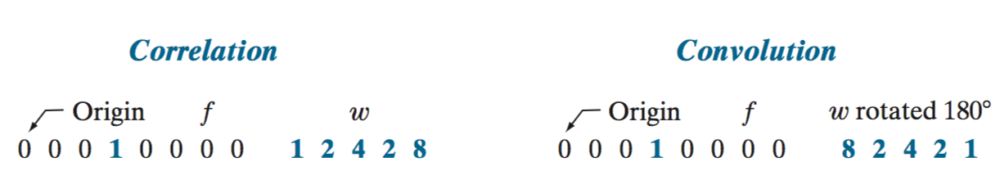
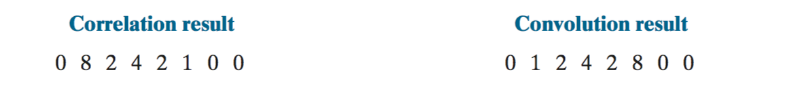
Với xung đơn vị, correlation cho bản sao kernel theo chiều ngược; convolution xoay kernel trước nên cho đáp ứng theo đúng chiều kernel.
Với kernel đối xứng, correlation và convolution cho cùng kết quả. Với kernel không đối xứng, kết quả khác nhau.
Đặt kernel không đối xứng lên ảnh chỉ có một điểm sáng ở tâm. Đáp ứng cho thấy rõ hướng của kernel.
Kernel gốc
| 1 | 2 | 3 |
| 4 | 5 | 6 |
| 7 | 8 | 9 |
Correlation với xung
| 9 | 8 | 7 |
| 6 | 5 | 4 |
| 3 | 2 | 1 |
Convolution với xung
| 1 | 2 | 3 |
| 4 | 5 | 6 |
| 7 | 8 | 9 |
Đây là mẹo kiểm tra: cho đầu vào là xung, nếu kết quả bị lật thì phép đang hoạt động theo kiểu correlation.
| Tính chất | Convolution | Correlation |
|---|---|---|
| Giao hoán | \(f*g=g*f\) | không có nói chung |
| Kết hợp | \(f*(g*h)=(f*g)*h\) | không có nói chung |
| Phân phối | \(f*(g+h)=(f*g)+(f*h)\) | \(f\star(g+h)=(f\star g)+(f\star h)\) |
Đây là lý do convolution tiện cho phân tích toán học và cài đặt nhanh; correlation lại hay xuất hiện trong thư viện vì trực tiếp "so mẫu".
Notebook week 4 dùng correlate2d để minh họa mode và boundary trước khi chuyển sang OpenCV.
from scipy import signal
def rgb_filter(image, kernel, mode="full", boundary="fill"):
b, g, r = cv2.split(image)
b = signal.correlate2d(b, kernel, mode=mode, boundary=boundary)
g = signal.correlate2d(g, kernel, mode=mode, boundary=boundary)
r = signal.correlate2d(r, kernel, mode=mode, boundary=boundary)
return cv2.merge([b, g, r])Ý chính của code: lọc từng kênh màu bằng cùng một kernel, rồi ghép lại thành ảnh RGB/BGR.
Kernel đi ra ngoài ảnh.
Ta phải quyết định phần thiếu là gì.
Cho mọi vị trí kernel còn chạm ảnh.
Kích thước: \((M+m-1)\times(N+n-1)\).
Giữ đầu ra cùng kích thước ảnh gốc.
Kích thước: \(M\times N\).
Chỉ lấy nơi kernel nằm trọn trong ảnh.
Kích thước: \((M-m+1)\times(N-n+1)\).
Trong thực hành xử lý ảnh, same phổ biến vì giữ kích thước ảnh để các bước sau dùng tiếp.
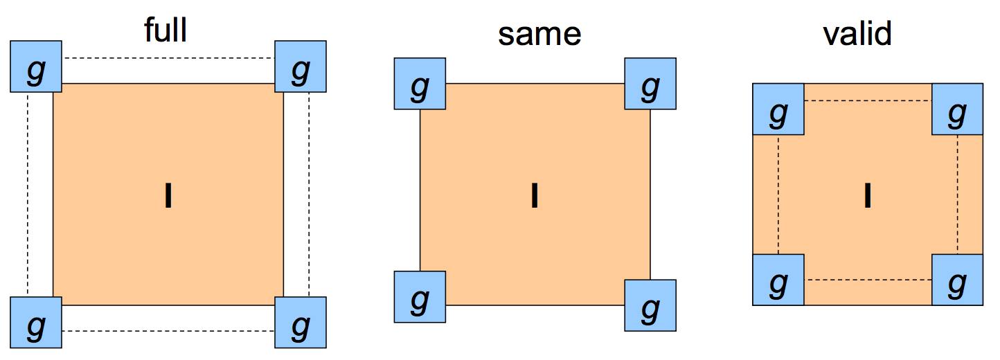
full lớn hơn vì nhận cả vị trí kernel chỉ chạm một phần ảnh; same giữ kích thước gốc; valid nhỏ hơn vì chỉ nhận vị trí kernel nằm trọn trong ảnh.
Điểm ngoài biên được xem là 0. Dễ tạo viền tối khi làm mượt.
Phản chiếu ảnh qua biên. Thường cho viền tự nhiên khi làm mượt.
Lặp lại điểm ảnh sát mép. Hay dùng khi muốn giữ kích thước mà ít tạo artefact đen.
Cuộn qua phía đối diện. Hợp với tín hiệu tuần hoàn, ít hợp với ảnh tự nhiên.
Padding không chỉ là chi tiết cài đặt; nó quyết định artefact xuất hiện ở viền ảnh.
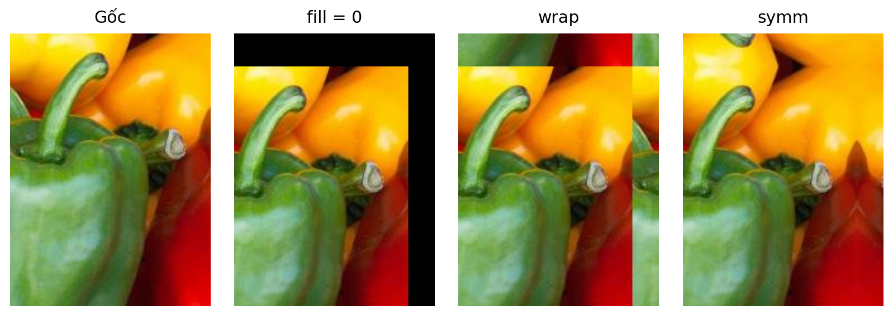
Một kernel dịch ảnh cho thấy rõ cách phần thiếu được sinh ra: fill tạo vùng đen, wrap lấy từ phía đối diện, symm phản chiếu vùng biên.
| Tham số | Giá trị | Ý nghĩa |
|---|---|---|
| mode | full, valid, same | quy định kích thước đầu ra |
| boundary | fill, wrap, symm | quy định cách xử lý phần ngoài ảnh |
| fillvalue | một số, mặc định 0 | giá trị đệm khi dùng boundary="fill" |
Khi kết quả "bị viền lạ", kiểm tra boundary trước khi nghi ngờ kernel.
Smoothing filters.
Giảm chuyển mức gắt, nhiễu và chi tiết không cần thiết.
Làm mượt là thay giá trị điểm ảnh bằng một giá trị "đại diện" cho vùng lân cận: trung bình, trung bình có trọng số, hoặc trung vị.
Mọi điểm trong cửa sổ có trọng số bằng nhau.
Điểm gần tâm có trọng số lớn hơn điểm xa tâm.
Sắp xếp các điểm trong cửa sổ; chọn median, min hoặc max.
Box và Gaussian là tuyến tính; median/min/max là phi tuyến.
Kernel box \(m\times n\) là mảng toàn số 1, chia cho tổng số phần tử:
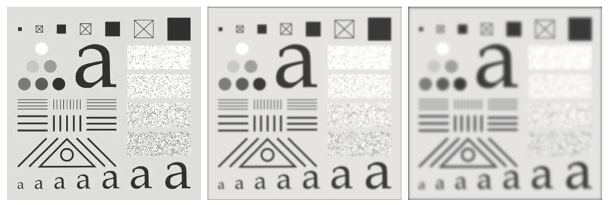
Kernel càng lớn thì ảnh càng bị làm mờ mạnh. Với zero padding, kernel lớn cũng làm viền tối rõ hơn.
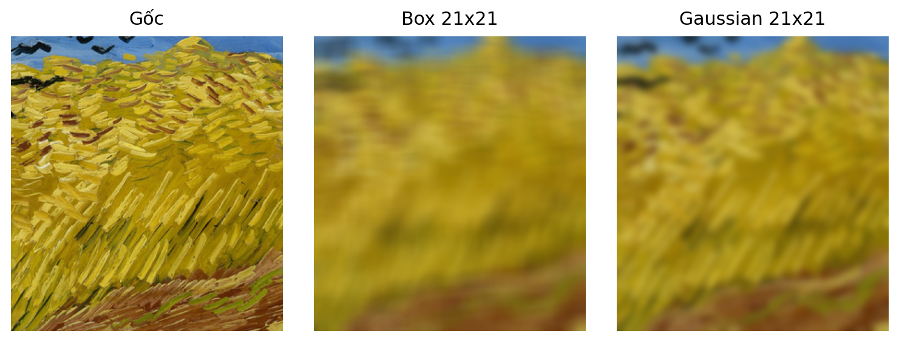
Cùng làm mượt bằng kernel lớn, box filter thường làm ảnh "bệt" hơn; Gaussian giữ chuyển mức tự nhiên hơn vì trọng số giảm dần từ tâm ra biên.
Gaussian dùng trọng số theo khoảng cách tới tâm:
Sau khi rời rạc hoá, kernel được chuẩn hoá để tổng trọng số bằng 1.
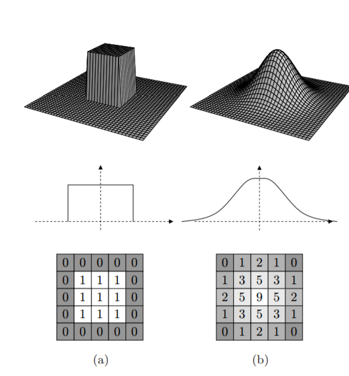
Box (a): mọi trọng số bằng nhau. Gaussian (b): trọng số lớn nhất ở tâm và giảm dần khi ra xa - nhờ đó Gaussian làm mượt tự nhiên hơn box filter.
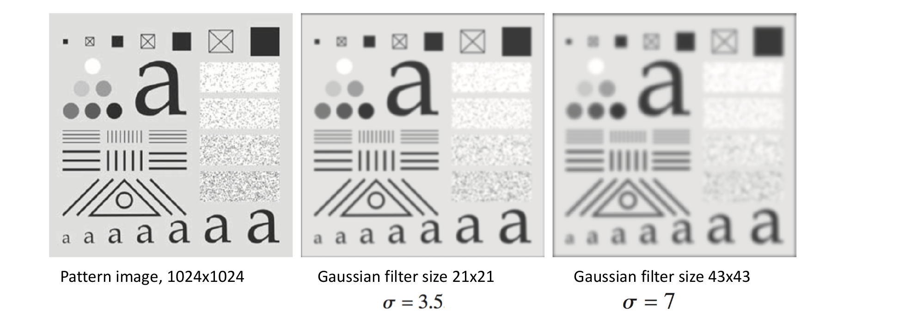
Cùng ảnh pattern \(1024\times1024\): kernel càng lớn (kèm \(\sigma\) lớn hơn) thì ảnh càng mờ. Gaussian \(43\times43\) (\(\sigma=7\)) làm mượt mạnh hơn \(21\times21\) (\(\sigma=3.5\)).
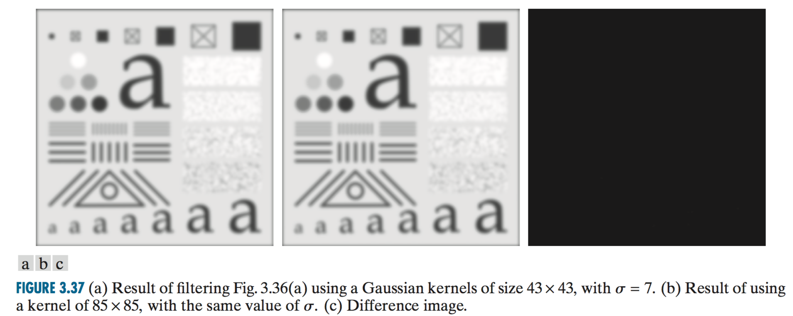
Khi \(\sigma\) giữ nguyên, tăng kernel từ đủ lớn lên rất lớn thường chỉ thay đổi kết quả rất ít, nhưng tốn tính toán hơn.
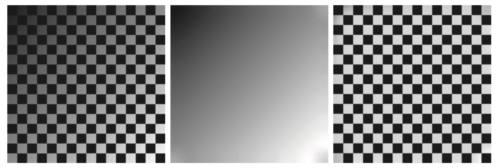
Làm mờ rất mạnh để lấy nền chiếu sáng chậm biến thiên, rồi chia ảnh gốc cho nền ước lượng để giảm shading.
# Averaging / box filter
kernel = 1/9 * np.array([
[1, 1, 1],
[1, 1, 1],
[1, 1, 1],
])
fimage = cv2.filter2D(image, -1, kernel)
# Gaussian kernel tu gan dung
kernel = 1/16 * np.array([
[1, 2, 1],
[2, 4, 2],
[1, 2, 1],
])
fimage = cv2.filter2D(image, -1, kernel)
# Hoac dung ham co san
fimage = cv2.GaussianBlur(image, (5, 5), 0)Trong slide, code giữ đúng ý notebook; khi chạy thực tế cần import cv2, numpy và đọc ảnh trước.
Một bộ lọc phi tuyến để khử nhiễu.
Một kỹ thuật làm sắc bằng ảnh mờ.
Median filter thay giá trị điểm trung tâm bằng trung vị của các giá trị trong vùng lân cận.
Một điểm nhiễu rất lớn không kéo trung vị lên mạnh như kéo trung bình.
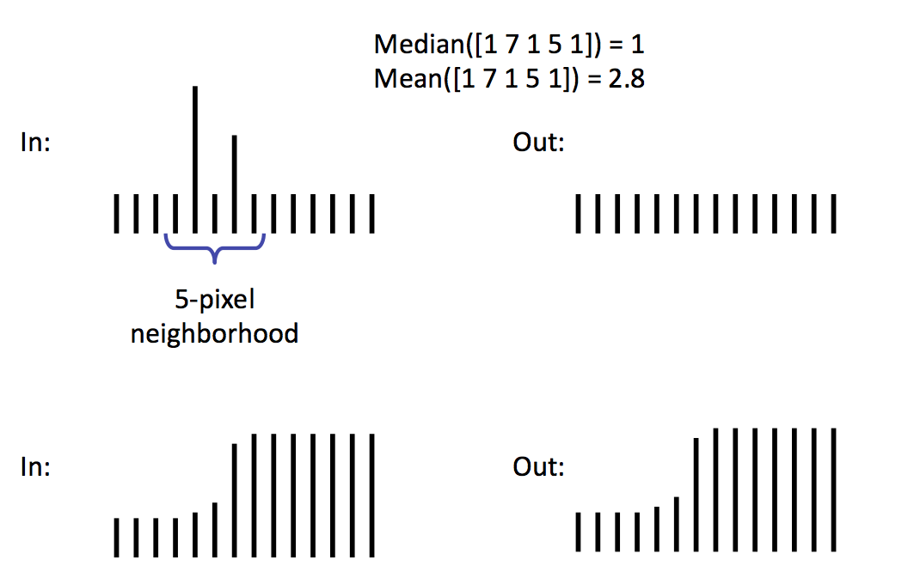
Trong cửa sổ có spike, mean bị kéo lên còn median vẫn chọn giá trị đại diện ở giữa, nên loại nhiễu xung tốt hơn.
| 10 | 15 | 20 |
| 23 | 90 | 27 |
| 33 | 31 | 30 |
Tâm đang là nhiễu xung: 90.
Sắp xếp 9 giá trị:
10 15 20 23 27 30 31 33 90
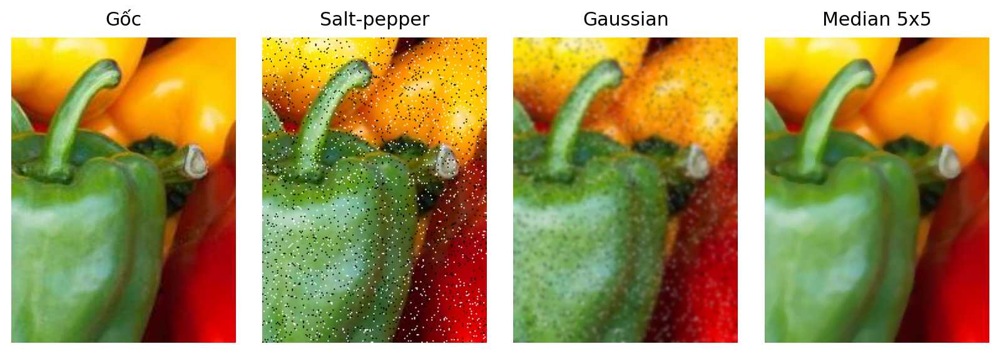
Gaussian làm mờ nhiễu nhưng vẫn để lại chấm lấm tấm; median loại nhiễu xung rõ hơn vì nó chọn giá trị theo thứ hạng, không lấy trung bình.
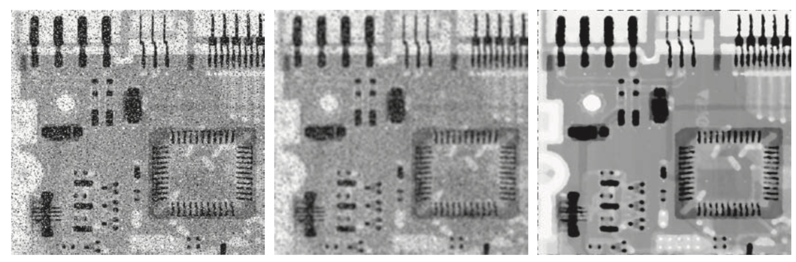
Gaussian 19x19 làm mờ cả chi tiết; median 7x7 giảm nhiễu impulse nhưng giữ cấu trúc ảnh rõ hơn.
# Median filtering
fimage = cv2.medianBlur(image, 5)
# Kernel lon hon: khu nhieu manh hon nhung mat chi tiet hon
fimage = cv2.medianBlur(image, 21)
fimage = cv2.medianBlur(image, 45)Kernel median thường dùng kích thước lẻ. Tăng kích thước cửa sổ là đổi khử nhiễu mạnh hơn lấy mất chi tiết hơn.
Khi \(k=1\): unsharp masking. Khi \(k>1\): highboost filtering.
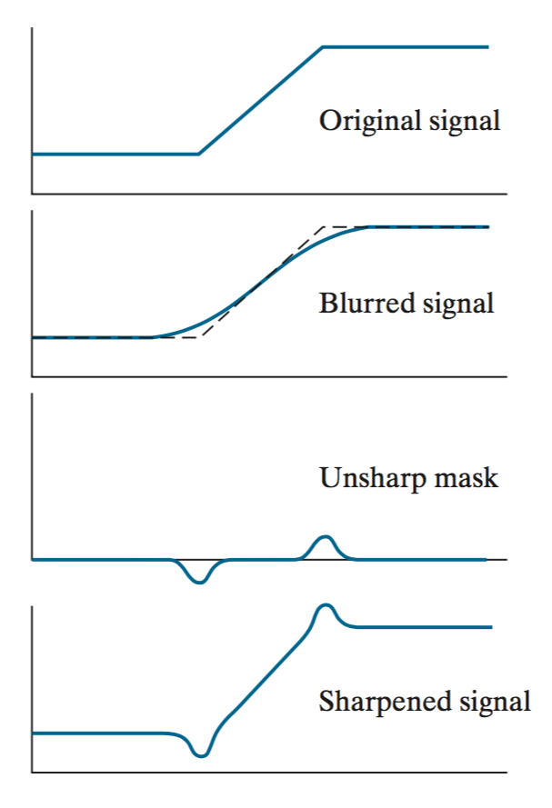
Blur làm mềm bậc thang; mask là phần gốc trừ ảnh mờ; cộng mask trở lại tạo overshoot nhẹ quanh cạnh và làm cạnh sắc hơn.
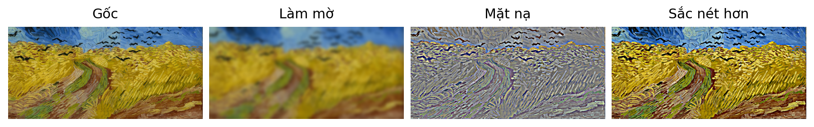
Ảnh mờ giữ thành phần tần số thấp; mask giữ chi tiết cao tần. Cộng mask trở lại làm biên và vân ảnh rõ hơn.
Chuỗi ví dụ cũ cho thấy rõ: ảnh gốc, ảnh blur, mask chi tiết và kết quả sau khi cộng mask trở lại.
blur = cv2.GaussianBlur(image, (7, 7), 3.0)
fimage = cv2.addWeighted(image, 1.7, blur, -0.5, 0)
plt.subplot(1, 3, 1); plt.imshow(image[:,:,::-1]); plt.title("original")
plt.subplot(1, 3, 2); plt.imshow(blur[:,:,::-1]); plt.title("blur")
plt.subplot(1, 3, 3); plt.imshow(fimage[:,:,::-1]); plt.title("sharpen")addWeighted hiện thực \(1.7\cdot\text{image}-0.5\cdot\text{blur}\), tức cộng lại một phần chi tiết đã bị blur loại bỏ.
Nếu đã có kernel, dùng cv2.filter2D để áp vào ảnh:
# Kernel bat ky: chuan hoa de tong trong so = 1
kernel = np.random.rand(5, 5)
kernel = kernel / sum(kernel.ravel())
fimage = cv2.filter2D(image, -1, kernel)
# Gaussian voi bien phan chieu
fimage = cv2.GaussianBlur(image, (5, 5), 1.0, cv2.BORDER_REFLECT)Trong OpenCV, tham số border quyết định cách xử lý biên; đây là cùng câu chuyện với boundary trong correlate2d.
Câu hỏi quan trọng khi chọn bộ lọc: ta muốn lấy trung bình, giữ trung vị, hay khuếch đại phần chi tiết?